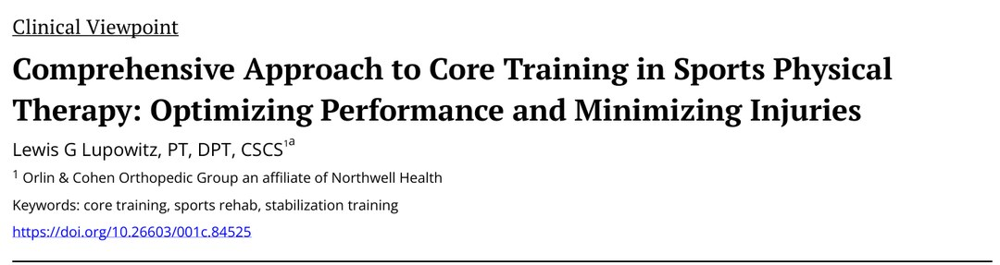
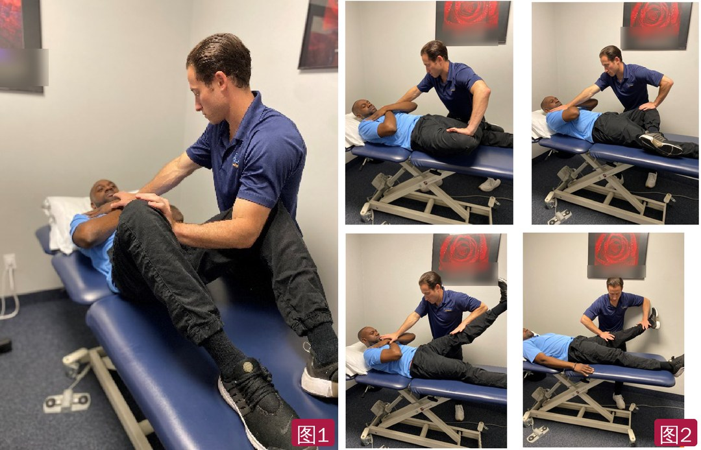
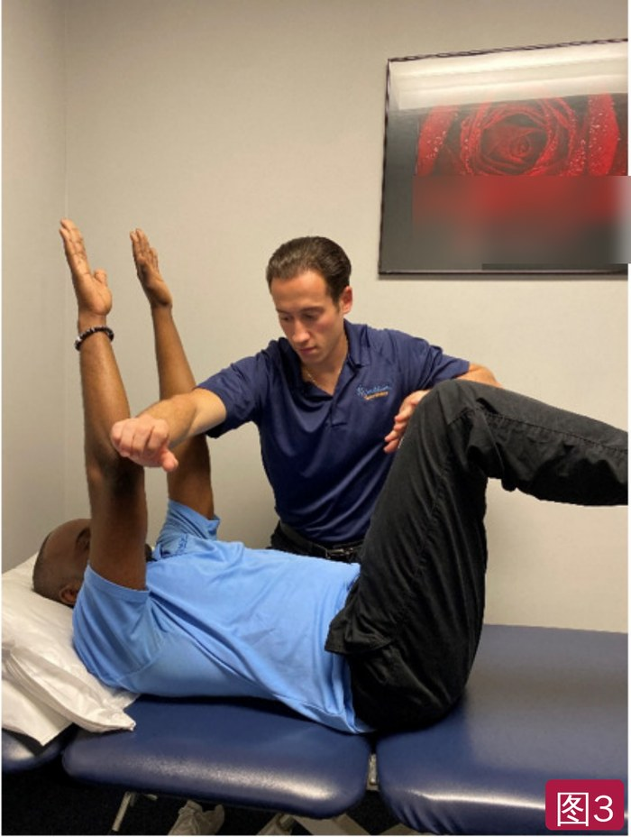
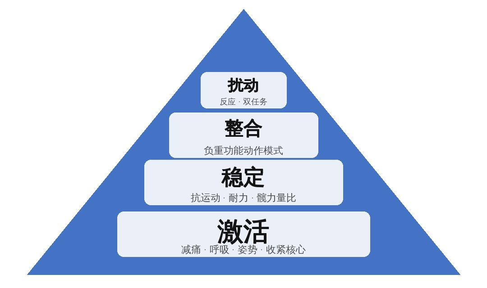

🔖原文首页（IJSPT 2023 年第 18 卷第 4 期）
📚 文献卡片
▪ 英文原题：Comprehensive Approach to Core Training in Sports Physical Therapy: Optimizing Performance and Minimizing Injuries（运动物理治疗中的全面核心训练：提升表现、减少损伤）
▪ 作者：Lewis G. Lupowitz, PT, DPT, CSCS
▪ 机构：Orlin & Cohen 骨科集团（Northwell Health 附属机构），美国纽约
▪ 期刊：International Journal of Sports Physical Therapy（IJSPT）
▪ 年卷期：2023;18(4):800-806
▪ PMCID：PMC10399110
▪ 文章类型：临床观点（Clinical Viewpoint）
▪ 关键词：core training · sports rehab · stabilization training
核心为运动员提供稳定、力量传递和损伤预防。大家都知道核心要练，但文献里一直缺少一套系统的、有证据依据的核心训练方法。
本文梳理了核心的解剖、功能、各运动项目的常见核心损伤和临床评估方法，并提出作者自己的四阶段训练框架——“核心四层金字塔”：激活 → 稳定 → 整合 → 扰动，每一阶段都有进入标准、目标和对应训练。
| 环节 | 要点 |
|---|---|
| 核心范围 | 肩胛到臀部之间的所有结构：腰-盆-髋复合体，上至膈肌、下至盆底，后至多裂肌、前至腹直肌 |
| 四大功能 | 预判动作 · 稳定脊柱 · 为负重做准备 · 连接上下肢 |
| 常见损伤 | 棒球腹斜肌拉伤、篮球/冰球/足球内收肌拉伤、橄榄球“运动疝” |
| 评估 | 主观 + 触诊/活动度/呼吸与肋骨位置/内收外展力量比 + 功能测试 + 躯干耐力 + 特殊检查 + 动态核心评估 |
| 训练框架 | 激活 → 稳定 → 整合 → 扰动，按标准逐级进阶 |
一句话概括：先会呼吸、会收紧，再抗住运动、练耐力，然后带进深蹲硬拉等动作，最后在干扰和反应中保持稳定。
• 核心指肩胛与臀部之间的所有结构，包括腰-盆-髋复合体：上至膈肌、下至盆底，后至多裂肌、前至腹直肌
• 可分为稳定肌（如腹内、外斜肌，离心控制活动范围）和动力肌（如腹直肌、髂肋肌，向心加速）
• 各肌肉虽可单独训练，但实际通过筋膜链（致密结缔组织）协同工作，形成动态系统，像链条一样把力传遍全身
| 核心的四大功能 | 说明 |
|---|---|
| ① 预判动作 | 让身体为动态动作提前做好准备 |
| ② 稳定脊柱 | 为力量传递提供坚实基础 |
| ③ 为负重做准备 | 负重活动时提供足够支撑 |
| ④ 连接上下肢 | 走、跑、投掷时协调上下肢动作 |
核心稳定性：中枢神经系统察觉变化、提前募集肌肉，使躯干维持在稳定的骨盆基础上，防止“塌陷”，或在受到扰动后恢复平衡。它关系到动作效率、动态控制和损伤预防。
| 项目 | 主要发现 |
|---|---|
| 棒球 | • Conte 等（2012）：腹部拉伤占伤病名单的 5%，2000 年代呈上升趋势；主要是腹内/外斜肌，打者多见，偏向对侧（前导侧） • Camp、Conte 等（2017）：每年 996 例腹斜肌损伤，共缺阵 22,064 天；小联盟更多，击球最受影响；再伤率 8.15%，赛季早期多见；注射治疗者重返时间更长 |
| 篮球 | • Jackson 等：NBA 24 年（1988～2012）髋部损伤（含腘绳肌、内收肌拉伤）多发生在赛季第一个月 • Patel 等（2010～2019）：72 名球员腹股沟损伤，6 例手术；平均 7～10 场或 17～20 天重返，再伤率 18%（甚至 1.5 年后），但重返后表现无变化 |
| 橄榄球 | • Tramer 等（2010～2016）：NFL 112 名球员非手术治疗的髋和核心损伤，进攻球员缺阵 4.0 ± 5.2 场，防守球员 3.1 ± 2.6 场 • Jack 等（1996～2015）：运动疝手术后 94.7% 重返，防守后卫和外接手最常见 |
| 冰球 | • Tyler 等：腹股沟拉伤 3.2 次/1000 人次比赛暴露 • Emery 等：NHL 训练营期间腹股沟拉伤风险是常规赛的 5 倍、季后赛的 20 倍；90% 为非接触；腹部损伤平均缺席 10.59 次训练/比赛，腹股沟 6.59 次 |
| 足球 | • Giza 等（2005）：美国职业男足 2002 赛季 9.5% 的球员腹股沟拉伤 • Sherman 等：髋和腹股沟损伤占足球损伤的 14% • Ekstrand 等：肌肉损伤多发生在比赛后段、年长球员；23% 与内收肌有关（平均缺席 14.0 ± 6.2 天）；腹部拉伤 <1%，但平均缺席 12.6 ± 9.2 天 |
先了解损伤机制和运动需求，再做主观、客观评估、功能测试和特殊检查，找出损伤的根本原因。
二者力的方向相反，在伸髋和躯干旋转时互为拮抗。它们的纤维在耻骨联合处汇合，形成耻骨腱膜（“耻骨板”），作为二者的支点。推测任一肌腱受伤都会改变生物力学，削弱骨盆稳定，使耻骨联合更易进一步受伤。
• 最常见：运动时出现深部、慢性的腹股沟或下腹痛，休息缓解，变向时加重
• 可能描述某处“卡一下”或“咬一下”的感觉；被诱发时会抓住该部位或面露痛苦
• 常见损伤机制（Anderson 等，2013）：过度用力旋转、过伸加旋转、脊柱负荷过大、躯干-骨盆分离控制差
• 触诊核心区压痛；测胸椎和骨盆在不同体位的活动度，观察肋骨位置
• 评估膈肌和盆底控制：理想状态是 360° 的压力腔——呼气时肋骨内旋、膈肌上抬呈穹顶状，骨盆后倾；很多人却是肋骨外旋、膈肌扁平，静息时可见肋骨外翻，可能使疼痛迁延
• 左侧膈肌位置更低、中心腱更小，可能造成天然的不对称，旋转类运动员尤其容易因此受伤
• 内收/外展力量比：Tyler 等（2001）发现比值 <80% 者受伤风险高 17 倍
• 单腿蹲/上台阶、单腿臀桥、躯干耐力测试
• Chaudhari 等（2014）：大联盟投手 3 英寸上台阶时骨盆前后偏移峰值越大，赛季中肩伤、UCL 撕裂和其他肘部拉伤风险越高
• Meister 等（2021）：职业投手单腿平衡时骨盆偏移大（核心稳定差），与上肢损伤有关
• McGill 等：女性屈、伸耐力更好，男性侧桥耐力更好；男性屈/伸耐力比略高
• Leetun 等：核心稳定指标低的运动员更易下肢受伤；受伤者髋外展、外旋力量（占体重百分比）更低，侧桥和背伸耐力更差——近端稳定才能保护远端
• 咳嗽试验：咳嗽可能诱发受累部位疼痛
• 抗阻内收仰卧起坐试验（RASUT）：区分骨盆与髋关节病变、排除运动性耻骨痛；诊断比值比 6.08，敏感度 78%，阴性预测值 88%（图1）
• Kurowicki 等：以下 4 项诱发疼痛或复现症状，识别核心肌肉损伤的敏感度 100%（图2）：
• ① 4 字位抗阻交叉仰卧起坐：患侧下肢置于 4 字位，对侧肩抗阻向患侧方向抬起
• ② 直腿仰卧起坐：双肩和患侧腿抬离床面约 10 英寸（约 25 cm），抗阻保持
• ③ 外旋位抗阻屈髋
• ④ 4 字位时存在内收肌挛缩

🔖图1（左）：抗阻内收仰卧起坐试验（RASUT）；图2（右）：Kurowicki 等的四项核心肌肉损伤检查（照片背景海报上的英文已模糊处理）
作者让患者取死虫式起始位（图3），治疗师从多个方向施加阻力，挑战每条筋膜链的稳定，并与患者沟通哪个方向最难稳住。据此找出缺陷、制定个体化方案。

🔖图3：死虫式起始位下的个体化动态核心评估（背景海报英文已模糊处理）
四个阶段由下到上：激活、稳定、整合、扰动。每一阶段都有进入标准、目标和对应训练。

🔖图4：核心四层金字塔（原图为英文，已按原内容中文重绘，并补充各层要点）
| 第一层：激活 | |
| 目标 | • 减轻疼痛 • 恢复正确的呼吸模式 • 改善姿势和活动度 • 教会核心收紧（bracing） • 提高髋部力量 • 患者教育 |
| 训练 | • 理疗、生物反馈 • 膈式呼吸 • 核心等长收缩 • 髋部训练 • 骨盆摆位 • 躯干-髋分离活动练习 |
| 第二层：稳定 | |
| 进入标准 | • 呼吸协调 • 姿势排列良好 • 无需提示即可主动收紧核心 • 髋力量比（外展:内收）改善 • 躯干耐力比改善 |
| 目标 | • 近端稳定下远端活动 • 产生扭矩和力量 • 引入节律性稳定 • 恢复躯干耐力比和髋力量比 |
| 训练 | • 抗运动训练：死虫、鸟狗、Pallof 推、劈砍、上提 • 耐力型核心训练：各种平板支撑（侧桥、哥本哈根）、反向/常规背伸 • 臀桥 • 平衡/本体感觉训练 |
哥本哈根平板支撑的证据：Harøy 等在 35 支半职业足球队中做随机对照试验，干预组季前（6～8 周）每周 3 次、赛季中（28 周）每周 1 次做三级哥本哈根平板支撑，腹股沟相关损伤率下降 41%。
| 第三层：整合 | |
| 进入标准 | • 力量比和耐力比已恢复 • 多关节训练中姿势不崩 |
| 目标 | 给功能性动作模式加负荷 |
| 训练 | • 深蹲、髋铰链、弓步 • 负重行走 • 垂直/水平推、划船 • 侧滑 • 爬行 |
| 第四层：扰动 | |
| 进入标准 | • 负重下保持良好排列 • 不稳定平面上，或稳定平面闭眼时，神经肌肉控制良好 |
| 目标 | • 提高中枢神经系统察觉变化、适应外力的能力，改善稳定和力量传递 • 缩短反应时间 |
| 训练 | • 双任务训练 • 徒手抗阻/扰动 • 视觉反应任务 • 口令反应训练 |
• 证据级别低：临床观点类文章，“核心四层金字塔”来自作者临床经验，没有验证研究或患者结局数据
• 亮点：把评估（尤其呼吸/肋骨位置、内收外展比、躯干耐力、特殊检查）和分层训练连在一起，每层有进入标准，便于临床落地
• 标准不够量化：各阶段的进入标准多为描述性（如“力量比改善”“耐力比恢复”），没有给出具体数值或测试方法
• 流行病学部分以美国职业联盟为主，与业余或青少年人群的推广性有限；部分研究讲的是髋/腹股沟损伤，与“核心损伤”的界定并不完全一致
• 原文小瑕疵：图 4 正文未引用；“rectus abdomen”应为 rectus abdominis，“recuts”拼写错误；Chaudhari 写成 Chaudhair；“she light”应为 shed light；Emery 研究“more 5x and 20x more likely”句子重复
① 先评估：问机制和运动需求；看呼吸与肋骨位置，测内收/外展比（<80% 风险高 17 倍）、躯干耐力；做 RASUT 等特殊检查和死虫位动态评估
② 激活：减痛、膈式呼吸、学会收紧核心、髋部力量、躯干-髋分离
③ 稳定：死虫、鸟狗、Pallof、劈砍；侧桥和哥本哈根平板（腹股沟损伤降 41%）
④ 整合：蹲、铰链、弓步、负重走、推拉、爬行，多关节动作中姿势不崩
⑤ 扰动：双任务、徒手扰动、视觉和口令反应，提高反应和适应能力
⑥ 贯穿始终：近端稳定才能保护远端，按标准逐层进阶
欢迎关注悦美力公众号，获取更多物理治疗的专业知识！
📄参考文献：
Lupowitz LG. Comprehensive Approach to Core Training in Sports Physical Therapy: Optimizing Performance and Minimizing Injuries. Int J Sports Phys Ther. 2023;18(4):800-806. PMCID: PMC10399110.
文中图片均来自原文：照片背景海报上的英文已模糊处理，图 4 金字塔按原内容中文重绘；原文无表格，文中表格为整理，仅用于学术交流。